Chapter 6: Intramolecular Cyclization Side Reactions
Chapter 6: Intramolecular Cyclization Side Reactions
（分子内环化副反应）
章节概述
本章讨论多肽合成中的分子内环化副反应。由于同一肽分子内存在大量官能团，当条件适当时，分子内官能团之间的反应不可避免地会导致环化杂质的形成。主要包括：Aspartimide形成、Asn/Gln脱酰胺、焦谷氨酸（Pyroglutamate）形成、乙内酰脲（Hydantoin）形成，以及N端Cys(Cam)和N-溴乙酰化肽的环化副反应。
6.1 Aspartimide形成（天冬酰亚胺形成）
6.1.1 形成机理
Aspartimide形成是最臭名昭著的多肽合成副反应之一。其机理如下： 1. 含有-Asp(X)-Xaa-序列的肽1中，主链酰胺（backbone amide）作为亲核试剂攻击Asp侧链的酯基取代基 2. 形成五元环aspartimide中间体2，同时释放羟基衍生物作为离去基团 3. 由于aspartimide上Hα酸性增加，加速了质子交换，导致Cα消旋，形成对映异构体2 4. Aspartimide中间体可经Path A或Path B两种路径发生开环： - Path A：生成(l/d)-α-Asp 3 - Path B：生成(l/d)-iso-Asp 5 5. 如果亲核试剂是哌啶（Fmoc脱保护步骤），则生成(l/d)-α-Asp哌啶化物4或(l/d)-iso-Asp哌啶化物6（分子量增加67 Da） 重要特征： - Aspartimide前体可以是侧链保护的Asp酯(X=OR)、Asn(X=NH₂)或侧链未保护的Asp - 可被强酸、碱（如肼）甚至储存过程中触发 - 具有累积性：每次哌啶处理都会增加aspartimide杂质的程度
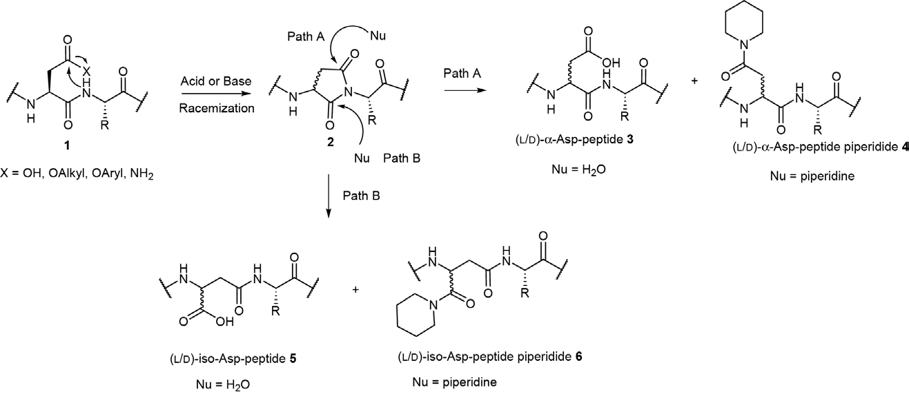
Figure 6.1 Aspartimide形成及相关杂质的机理
6.1.2 影响因素
6.1.2.1 碱
- 碱催化aspartimide形成，所有涉及碱的步骤都可能触发此副反应 - DIEA比三甲胺更不易诱导aspartimide形成（空间位阻更大） - 碱的浓度是关键因素 - Fmoc脱保护用的仲碱（哌啶）是aspartimide形成的主要原因 - 哌嗪（piperazine）和1-羟基哌啶比哌啶更能降低aspartimide形成 - DBU和TBAF比哌啶更容易诱导aspartimide形成（但不会生成哌啶加合物）
6.1.2.2 酸
- HF（Boc/Bzl化学）可诱导aspartimide形成 - TFMSA、6N HCl和浓TFA也能催化aspartimide形成
6.1.2.3 Asp侧链保护基
这是调节aspartimide形成倾向最关键的因素之一。保护基的两个主要属性： • 电子效应：吸电子性较弱的保护基降低aspartimide倾向 • 空间效应：体积较大的保护基增加空间位阻，抵抗主链酰胺的亲核攻击 各种保护基性能比较： - Asp(OBzl)（苄基酯）：在酸性环境中极易形成aspartimide，不是理想选择 - Asp(OChx)（环己基酯）：比OBzl好，但不能完全抑制 - Asp(OtBu)（叔丁基酯）：Fmoc化学中广泛应用，显著优于OBzl和OChx - Asp(OAll)（烯丙基酯）：极易诱导aspartimide形成 - Fmoc-Asp(OMpe)-OH和Fmoc-Asp(ODie)-OH：优于Asp(OtBu) - Trt衍生保护基（OPyBzh、OPhFl、OPp）：效果不佳，甚至加重aspartimide形成 - Asp(OBO)（原酸酯）：逐渐水解为促进aspartimide形成的衍生物，应用受限 - Asp(ODmab)：虽有体积优势但反而加剧aspartimide形成 - 刚性较大的保护基（如O(1-Ada)、OPyBzh）效果不如柔性的OMpe/ODie
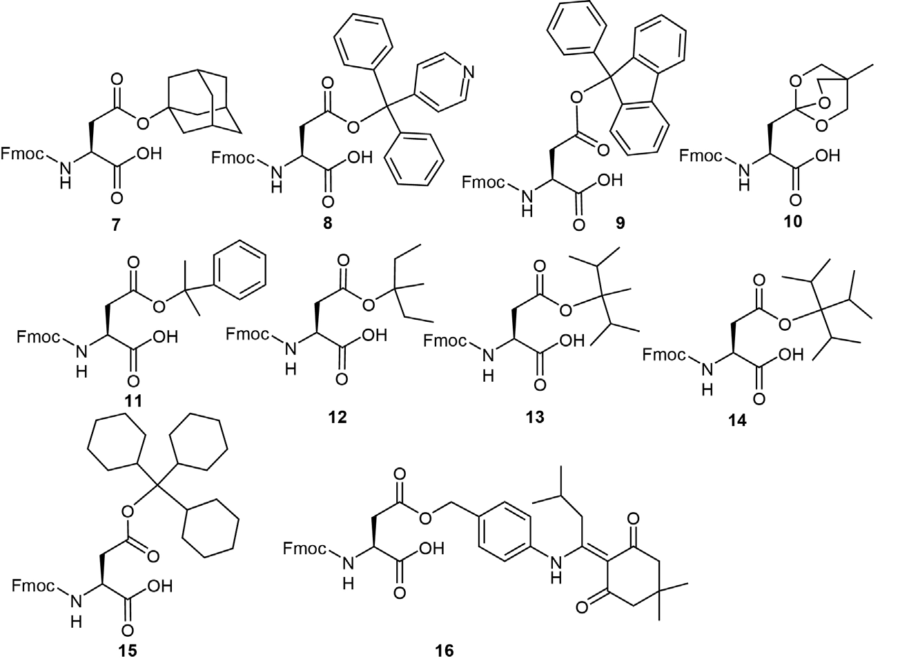
Figure 6.2 不同侧链保护基的Fmoc-Asp-OH衍生物
6.1.2.4 固相载体
- CTC树脂可用稀酸切肽，减轻强酸对Asp侧链酯基的活化，降低aspartimide形成 - PEGA或CLEAR®等低疏水性树脂优于聚苯乙烯：减少肽链间聚集，加速Fmoc脱保护动力学，缩短哌啶处理时间
6.1.2.5 温度
- 降低温度可有效抑制aspartimide形成 - 温度升高不可避免地加剧此副反应 - 对于含敏感序列的肽，严格控制温度极为重要
6.1.2.6 溶剂
- 溶剂极性直接影响aspartimide形成倾向：极性增加稳定极性中间体，推动反应向aspartimide方向进行 - Aspartimide形成倾向降序排列：DMSO > DMF >> THF > DCM - DCM是aspartimide问题严重时氨基酸偶联的首选溶剂 - THF可替代DMF作为哌啶溶液溶剂 - 非质子极性溶剂（DMF）优于质子溶剂（甲醇、乙醇、丁醇）
6.1.2.7 肽序列
-Asp(X)-Xaa-中Xaa的性质显著影响aspartimide形成： • -Asp(X)-Gly-：极度敏感！Gly体积小，有利于主链酰胺亲核攻击。这是最易发生aspartimide的序列 • -Asp(X)-Asn(Trt/Mtt)-：碱性条件下易形成aspartimide • -Asp(OtBu)-Asp(OtBu)-：连续Asp序列极具挑战性 • -Asp(X)-Ala/Gln(Trt)-：有争议，不同研究有矛盾结果 • -Asp(X)-His(Y)-：似乎pH依赖，碱性条件相对稳定，酸性环境倾向于环化 • 未保护的Ser/Thr：在碱性和酸性条件下均可显著刺激aspartimide形成 • Cys(Acm)比Cys(Trt)更易引起；Arg(Pbf)比Arg(Pmc)更易引起 注意：aspartimide形成不完全由序列决定，肽构象等其他因素也可能占主导地位
6.1.2.8 肽构象
- 关键氨基酸的突变可显著影响aspartimide形成 - CRH类似物研究中，-Asp²⁵(OtBu)-Gln²⁶(Trt)-序列受其C端-Leu²⁷-Ala²⁸-影响 - d-氨基酸扫描替换为d-Leu²⁷-d-Ala²⁸后触发aspartimide形成 - 说明受影响区域的空间排列可影响aspartimide形成
6.1.2.9 微波
- 微波技术可加速aspartimide形成 - 实例：DFDFDFEpGEFDFDFD序列，常规合成无aspartimide，微波照射后aspartimide相关杂质增至35.4% - 加入0.1 M HOBt到20%哌啶/DMF中可降低至15.4%，但仍不可接受 - 缓解措施：降温、用哌嗪替代哌啶、加入HOBt - 含敏感序列时尤其需要注意微波的影响
6.1.3 抑制策略
6.1.3.1 保护基优化
理想的Asp侧链保护基应满足： 1. 与Nα-保护基正交 2. 全局脱保护时易于去除 3. 适当的吸电子性 4. 有利的空间效应 5. 赋予良好溶解性 6. 不影响Asp偶联效率 推荐：Fmoc-Asp(OMpe)-OH、Fmoc-Asp(ODie)-OH优于Asp(OtBu)
6.1.3.2 碱的选择
- 降低pKa或增大碱的体积有利于抑制aspartimide - 哌嗪和1-羟基哌啶优于哌啶 - 六亚甲基亚胺/HOBt/NMP/DMSO混合溶液也表现优异 - 避免使用DBU和TBAF
6.1.3.3 骨架酰胺保护与假脯氨酸
骨架酰胺保护——最有效的aspartimide抑制策略： - Dmb、Hmb是常用的骨架酰胺保护基 - -Asp(OtBu)-N-Hmb-Xaa-单元可彻底抑制aspartimide形成 - Dcpm、MIM、EDOT在偶联动力学和酸不稳定性方面优于Dmb - 通常使用预制二肽Fmoc-Asp(OtBu)-N-Hmb-Xaa-OH作为构建块 假脯氨酸策略： - 将Ser/Thr/Cys转化为假脯氨酸衍生物 - Pro的二级胺性质使其免除aspartimide形成 - 假脯氨酸可被浓TFA逆转为原始结构 - 限制：需要Ser/Thr/Cys的β-官能团 - 通常预制为二肽Fmoc-Xaa-Ser/Thr/Cys(ψMe,MePro)-OH
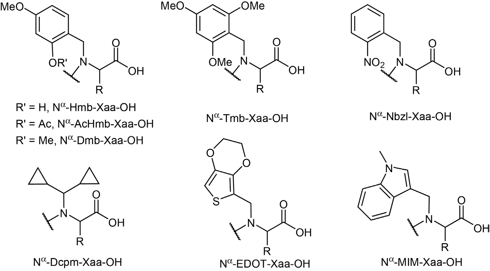
Figure 6.3 肽骨架酰胺保护基
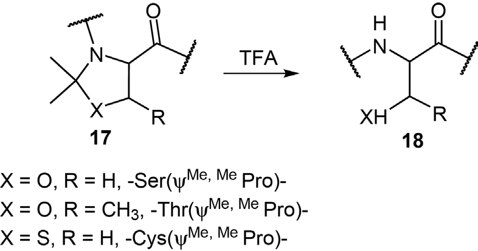
Figure 6.4 假脯氨酸衍生物的酸解
6.1.3.4 N-羟胺和酚衍生物
- HOAt、HOBt、Oxyma、HOPfp、DNP等酸性添加剂可抑制aspartimide形成 - 机理：这些酸性衍生物干扰主链酰胺去质子化的平衡 - 类似于-Asp(OtBu)-Glu/Asp/Tyr-中酸性侧链的邻近效应 - 需平衡浓度：既要抑制aspartimide，又不能过度抑制氨基酸偶联
6.1.3.5 替代Nα-保护基
- Nα-Trt：稀TFA去除 - Nα-Alloc：Pd(0)催化中性条件去除 - Nα-pNZ：SnCl₂或Na₂S₂O₄还原后自发去除，或加氢去除 - 所有这些保护基都可在酸性或中性条件下脱除，避免碱诱导的aspartimide
6.1.3.6 Asp β-羧基活化的精细调控
在N-糖基化和侧链-侧链环化等需要活化Asp β-羧基的过程中： - 活化的羧基具有理想离去基团，易受主链酰胺亲核攻击形成aspartimide - 大体积糖胺的缩合反应慢，需要更强的活化，进一步加剧问题 解决方案： - 用Glu替代Asp（六元环glutarimide形成远不如五元环aspartimide有利） - 将Asp置于C端（无-Asp-Xaa-酰胺键，不会形成aspartimide） - 使用预制N-糖基化Asn构建块，避免后翻译糖基化步骤
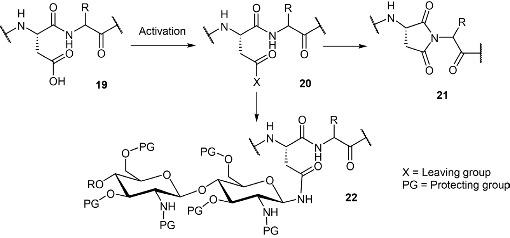
Figure 6.5 肽N-糖基化过程中的Aspartimide形成
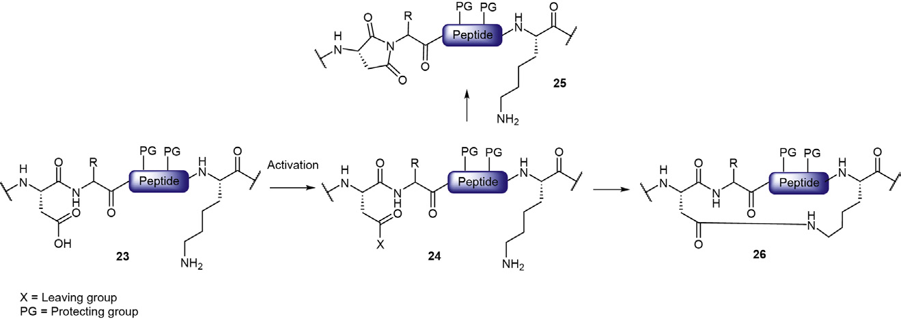
Figure 6.6 肽侧链内酰胺桥形成过程中的Aspartimide形成
6.1.3.7 Aspartimide甲醇解
- 这不是抑制方法，而是后处理策略 - 用2% DIEA/甲醇溶液处理aspartimide污染的产物 - 将环状aspartimide定量转化为l/d-α-Asp(OMe)和l/d-iso-Asp(OMe) - 放大目标肽与杂质之间的色谱差异，有利于后续纯化 - 也可用于过程控制：检测是否存在aspartimide相关杂质
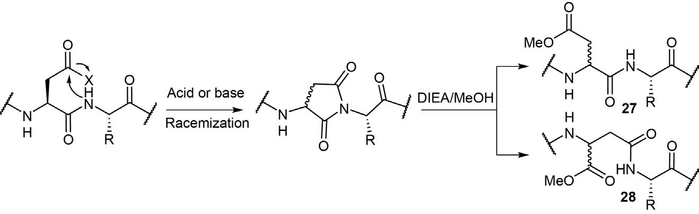
Figure 6.7 Aspartimide衍生物的甲醇解
6.2 Asn/Gln脱酰胺及相关副反应
6.2.1 脱酰胺机理
Asn/Gln的酰胺侧链被转化为羧基（分子量增加1 Da），同时伴随Cα构型变化和isoAsp形成。 Asn脱酰胺机理（非直接水解）： 1. -Asn-Xaa-单元的主链酰胺去质子化，形成阴离子亲核试剂 2. 亲核攻击Asn侧链的酰胺取代基，形成四面体中间体29 3. 释放NH₃，形成aspartimide中间体30 4. Cα消旋产生对映异构体31 5. 水亲核攻击开环：Path A生成l/d-Asp 32；Path B生成l/d-iso-Asp 33 6. 通常isoAsp 33比Asp 32更易形成 特殊情况： - -Asn-Pro-序列：直接水解（aspartimide形成罕见，因为Pro是仲胺） - Gln的直接水解比Asn更常见（六元环glutarimide不如五元环aspartimide有利） - -Asn-Pro-或-Asn-Leu-在100°C、pH 7.4下可发生分子内环化导致肽断裂
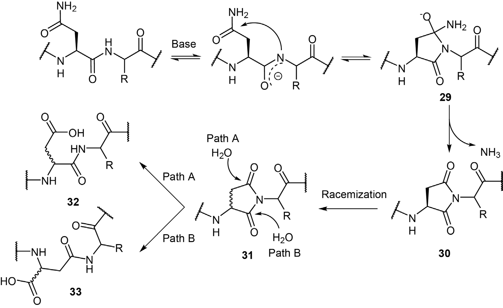
Figure 6.8 Asn脱酰胺及转化为Asp/iso-Asp的机理
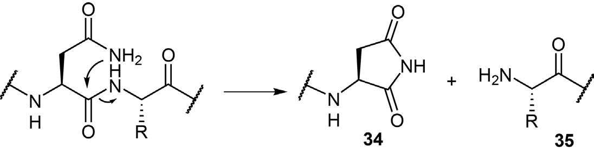
Figure 6.9 含-Asn-Xaa-肽断裂机理
6.2.2 影响因素
6.2.2.1 pH值
- pH是Asn/Gln脱酰胺模式的关键因素 - 中性或碱性：主要通过aspartimide/glutarimide中间体 - 酸性：主要是Asn/Gln侧链的直接水解 - 脱酰胺动力学最小值通常在pH 4-6范围 - 高pH促进aspartimide形成（加强主链酰胺去质子化） - 低pH诱导直接水解
6.2.2.2 肽序列
- Asn C端的氨基酸影响远大于N端 - -Asn-Gly-：极度敏感（类似-Asp-Gly-对aspartimide的影响） 可用于蛋白质化学中羟胺特异性断裂Asn-Gly之间的酰胺键 - 邻近Ser/Thr、His、Lys、Trp、Asp/Glu可能通过侧链催化效应参与脱酰胺 - 二级结构（α-螺旋或β-折叠）可屏蔽Asn，降低脱酰胺动力学
6.2.2.3 构象和其他因素
- d-Asn比l-Asn更不易脱酰胺（构型影响aspartimide形成步骤） - 温度升高加速脱酰胺 - 低介电常数有机溶剂可延缓脱酰胺（破坏去质子化主链酰胺阴离子的稳定性） - 脱酰胺可发生于合成、纯化、储存和使用全过程
6.2.3 对肽化学合成的影响
- 侧链未保护Asn/Gln的"最小保护"策略有风险： · 羧基活化时可脱水形成β-氰基丙氨酸 · 游离酰胺侧链可引起脱酰胺 · 实际上溶解度更差，更易链聚集 - 推荐使用侧链保护的Asn/Gln构建块 - N-糖基化Asn易受aspartimide形成影响，推荐Asp(OAll)正交性+骨架酰胺保护 - 侧链未保护Asn的羧基活化可形成C端aspartimide（在收敛片段缩合中有问题）

Figure 6.10 C端侧链未保护Asn活化时的Aspartimide形成
6.3 焦谷氨酸（Pyroglutamate）形成
焦谷氨酸来源于N端Gln或Glu的内酰胺形成。Gln比Glu更容易形成焦谷氨酸。 关键特征： - 首先在Boc/Bzl化学中发现：Na-Boc酸解脱除后，游离Na攻击Gln侧链酰胺形成五元环 - 酸催化：弱酸（如HOBt、Boc-Ile-OH）比强酸（HCl/Dioxane）更易诱导！ · 稀TFA（0.5%）比浓TFA（50%）产生更多焦谷氨酸 - 碱性环境相对稳定（DIEA和哌啶不引起明显焦谷氨酸形成） - 主要发生在N端Gln的酰化步骤（与偶联动力学相关） - 非累积性：一旦N端不再是Gln，焦谷氨酸形成基本停止 抑制策略： - 加速N端Gln的酰化（使用高效偶联试剂、大过量氨基酸） - 使用对称酸酐避免与弱酸（Fmoc-Xaa-OH本身）的接触 - 预活化氨基酸为活性酯 - 用DMF代替DCM（DMF中酰化动力学更快） - 精细调节HOBt浓度 - 保护Gln侧链可显著减少焦谷氨酸形成 内源性焦谷氨酸： - 内源性Glu被CDI活化后，γ-羧基活性酯与主链酰胺形成endo-pyroglutamate - 不稳定，可断裂为N端含pyroglutamate的片段和互补降解片段
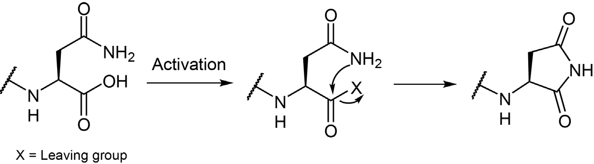
Figure 6.11 焦谷氨酸形成
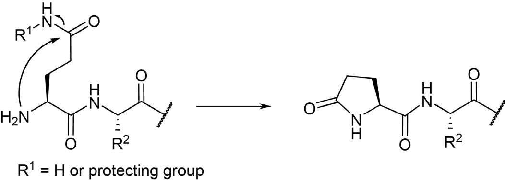
Figure 6.12 酸催化焦谷氨酸形成机理
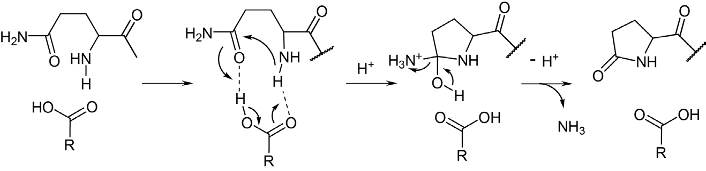
Figure 6.13 内源性焦谷氨酸形成及后续水解
6.4 乙内酰脲（Hydantoin）形成
乙内酰脲形成与碱催化aspartimide形成类似：碱去质子化酰胺或脲官能团，生成的阴离子对酯、酰胺、脲、氨基甲酸酯或酰肼中的羰基进行分子内亲核攻击，形成五元环乙内酰脲衍生物。 乙内酰脲形成的主要场景：
6.4.1 Aza-肽合成中
- 异氰酸酯中间体与Fmoc-NH-NH₂反应生成Fmoc-Aza-肽 - 哌啶脱Fmoc后，N端肼基甲酰胺受主链酰胺亲核攻击，释放肼形成乙内酰脲
6.4.2 N-异氰酸酯肽制备中
- 三光气/DIEA处理生成高活性异氰酸酯 - 在碱性条件下可发生分子内环化形成乙内酰脲，优先于与Fmoc-NH-NH₂的反应
6.4.3 脲基肽合成中
- N端Na活化生成氨基甲酸酯中间体 - 主链酰胺亲核攻击氨基甲酸酯形成乙内酰脲 - DMF比THF更促进乙内酰脲形成 - 胺试剂碱性太强/体积太大时更像碱而非亲核试剂，加剧乙内酰脲形成 - 极端情况：DIEA或DBU在DMF中可几乎定量将N-氨基甲酸酯肽转化为乙内酰脲
6.4.4 皂化过程中
- Na-Boc保护的全保护肽用NaOH皂化C端甲酯时，N端Boc-Tyr(OBzl)-Gly-可发生环闭合 - 形成五元环乙内酰脲，进一步水解为脲衍生物 - 抑制：先酸解除去Na-Boc再皂化 - Gly是第二个氨基酸时（N端第二个位置）乙内酰脲形成显著加剧
6.4.5 NCA聚合中
- Arg(Pbf)-NCA聚合为多肽时，N-羧基二肽在高pH下偏离正常的脱羧-亲核加成路径 - 发生分子内环化形成乙内酰脲，终止目标聚合反应 - pH依赖性：pH升高加剧乙内酰脲形成
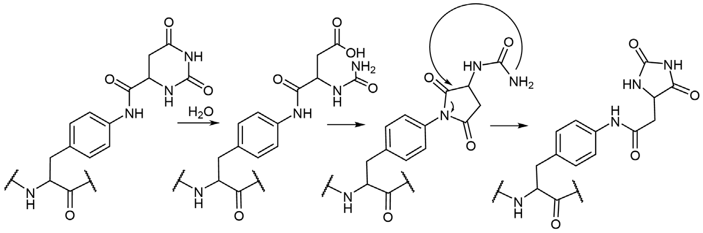
Figure 6.23 多肽合成中乙内酰脲形成的通式
两条通式路径： - Path A：主链酰胺氮（通常N端第二个氨基酸）攻击活性N端异氰酸酯或氨基甲酰官能团 - Path B：N端脲基的氮攻击主链酯键或酰亚胺键
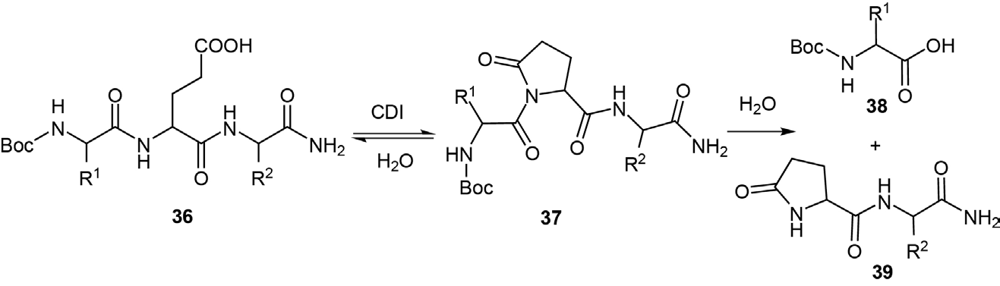
Figure 6.15 Aza-肽制备中的乙内酰脲形成
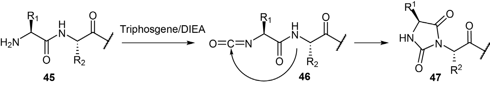
Figure 6.17 脲基肽合成中的乙内酰脲形成
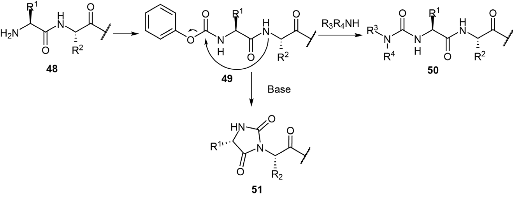
Figure 6.19 保护肽甲酯皂化中的乙内酰脲和脲形成
6.5 N端Cys(Cam)和N-溴乙酰化肽的环化副反应
6.5.1 N端Cys(Cam)的环化
- Cys(Cam)由碘乙酰胺处理Cys得到 - 在0.1 M NH₄HCO₃或其他弱碱溶液中可发生分子内环化 - 释放NH₃，形成硫代吗啉酮（thiomorpholinone）衍生物 - 分子量减少17 amu - 常见于蛋白质组学分析
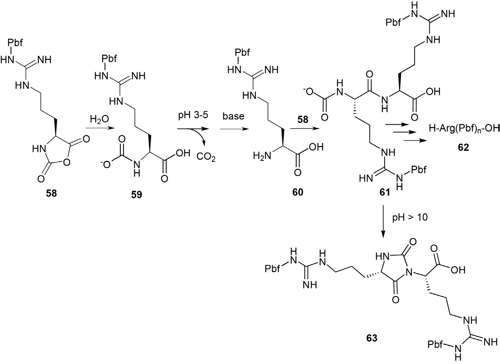
Figure 6.24 N-Cys(Cam)环化为硫代吗啉酮
6.5.2 N-溴乙酰化肽的环化副反应
N-溴乙酰化是肽/蛋白连接技术的常用策略。 与Cys的反应（最复杂）： - 近中性pH（6-8）：Cys侧链巯基攻击N端溴乙酰基，形成硫醚键环结构 - 酸性环境中巯基亲核性大幅降低 - 应排除硫醇型清除剂（但EDT可耐受） 与Lys/His的反应： - pH > 9时，Lys-Nε或Na可与溴乙酰基连接 - His咪唑基也可形成单取代或双取代产物 - 通过在酸性条件下进行合成和纯化可最小化这些反应 与Met的反应（最复杂）： - Met硫醚的亲核性在宽pH范围内保持 - Met在pH > 1.7即可与亲电试剂快速反应 - 在TFA或HF介导的全局脱保护中，Met硫醚与N端溴乙酰基反应 - 生成氨基甲酰甲基Met衍生物，不稳定，可分解/重排 - 最稳定的降解产物：S-氨基甲酰甲基高半胱氨酸（脱甲基产物） - 也可水解释放Met或形成高丝氨酸衍生物 注意事项： - 所有相关过程需严格控制pH - 排除硫醇和硫醚型清除剂 - 避光冻干，储存温度低于-20°C
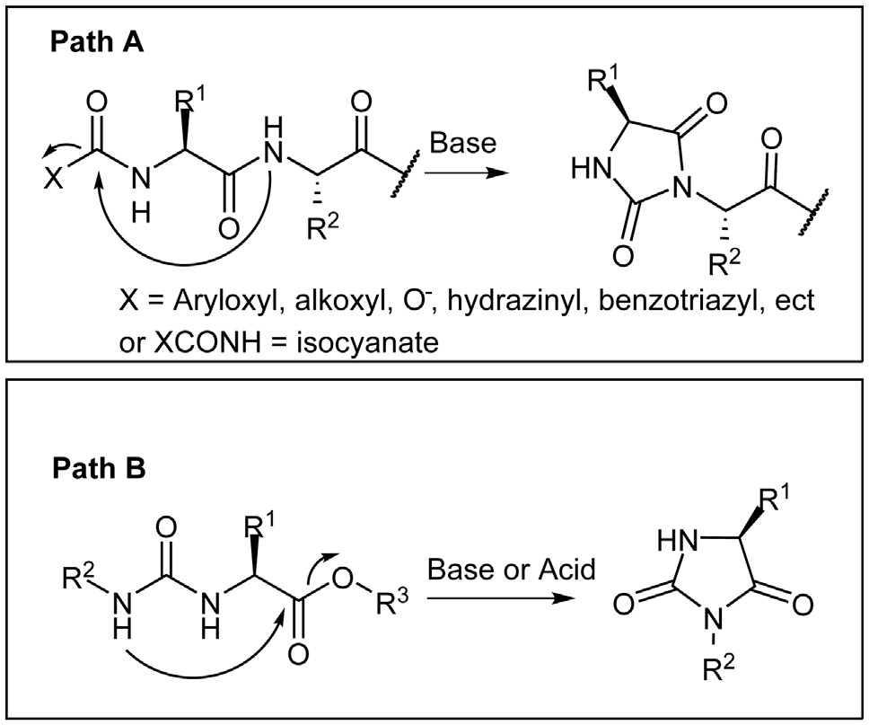
Figure 6.25 N端溴乙酰基与Cys侧链巯基的环化副反应
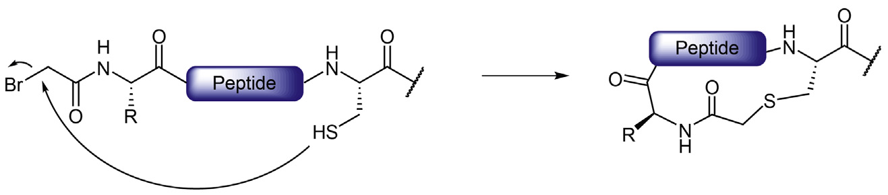
Figure 6.27 Met与N-溴乙酰肽形成氨基甲酰甲基Met衍生物及其降解路径
本章要点总结
| 副反应类型 | 机理核心 | 关键影响因素 | 主要抑制策略 |
|---|---|---|---|
| Aspartimide形成 | 主链酰胺亲核攻击Asp侧链酯基→五元环 | 保护基、碱、序列(-Asp-Gly-最敏感)、温度、溶剂、微波 | 骨架酰胺保护（最有效）、假脯氨酸、Asp(OtBu)/OMpe/ODie、哌嗪替代哌啶 |
| Asn/Gln脱酰胺 | Asp主链酰胺→Asn侧链酰胺→aspartimide→水解 | pH、序列(-Asn-Gly-最敏感)、温度 | 侧链保护Asn/Gln、pH控制、低温 |
| 焦谷氨酸形成 | N端Gln的Na攻击自身侧链酰胺→五元环内酰胺 | 弱酸催化、偶联动力学、溶剂 | 加速Gln酰化、高效偶联试剂、DMF替代DCM |
| 乙内酰脲形成 | 主链酰胺或N端脲基攻击活性羰基→五元环 | 碱、溶剂(DMF>THF)、Gly邻近效应、pH | THF替代DMF、控制pH、先脱Na保护再皂化 |
| N-Cys(Cam)/溴乙酰化环化 | 巯基/硫醚攻击N端溴乙酰基 | pH、氨基酸类型(Cys/Met最复杂) | pH严格控制、排除硫醇/硫醚清除剂、低温储存 |
学习日期：2026-04-12